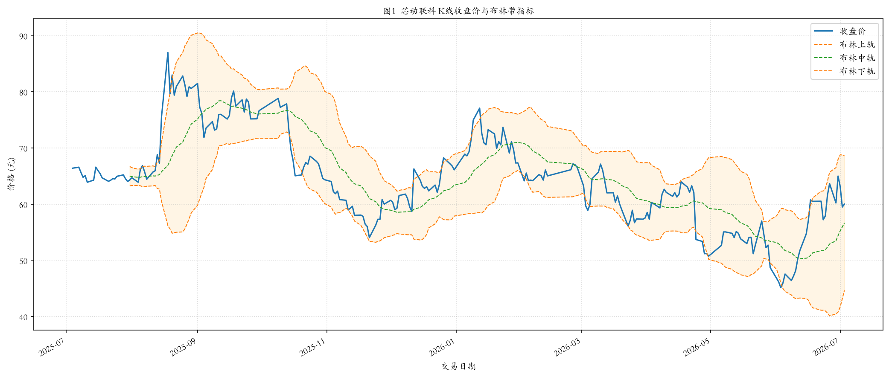
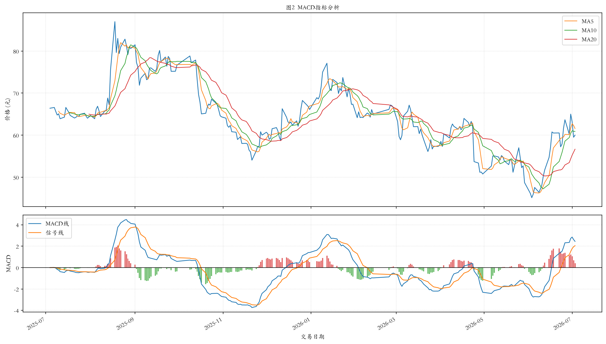
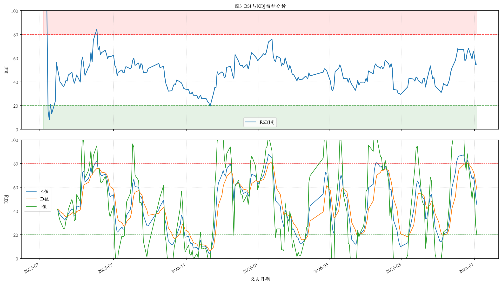
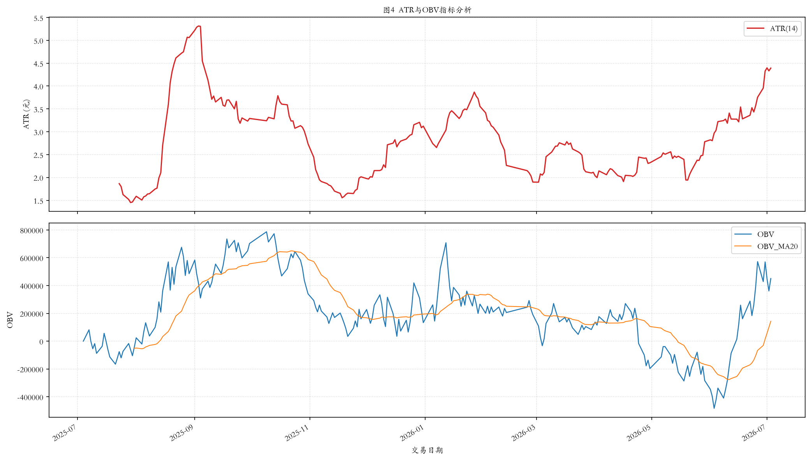
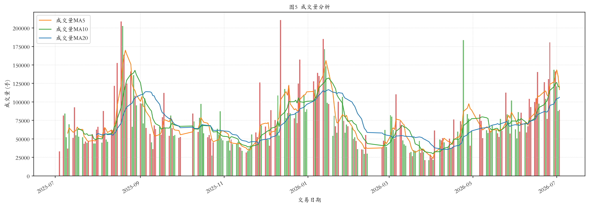
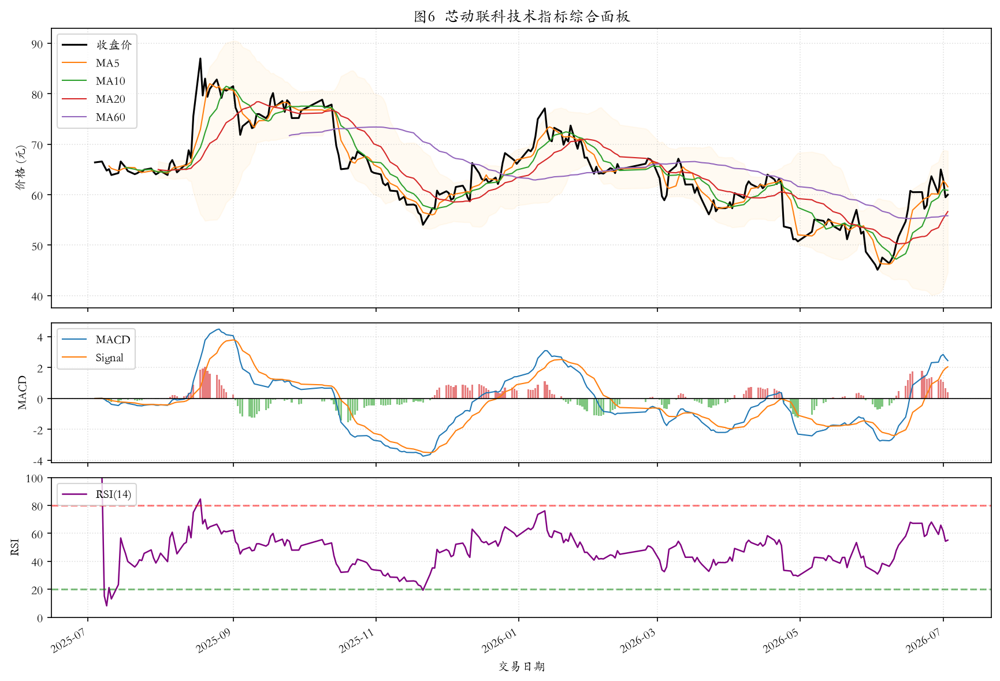

数据分析与可视化报告
报告日期：2026年7月4日
数据来源：Tushare Pro
分析工具：Python (pandas, numpy, matplotlib)
| 一、数据基础诊断分析 | 3 |
| 二、技术指标计算方法与实现 | 4 |
| 2.1 RSI相对强弱指标 | 4 |
| 2.2 MACD指标 | 5 |
| 2.3 布林带（Bollinger Bands） | 6 |
| 2.4 KDJ指标 | 7 |
| 2.5 ATR平均真实波幅 | 8 |
| 2.6 OBV能量潮 | 9 |
| 三、可视化结果与分析 | 10 |
| 图1 布林带指标分析 | 10 |
| 图2 MACD指标分析 | 11 |
| 图3 RSI与KDJ指标分析 | 12 |
| 图4 ATR与OBV指标分析 | 13 |
| 图5 成交量分析 | 14 |
| 图6 技术指标综合面板 | 15 |
| 四、结论与建议 | 16 |
| 五、操作建议详解 | 17 |
本报告所使用的数据为芯动联科（股票代码：688582.SH）2025年7月4日至2026年7月3日共242个交易日的日级交易数据，数据通过Tushare Pro金融数据接口获取，并保存为CSV格式以备后续使用。
对数据的缺失值情况进行全面检查，结果显示所有字段均无缺失值，数据完整性良好，可以直接用于后续的技术指标计算与分析工作。具体字段包括：交易日期（trade_date）、开盘价（open）、最高价（high）、最低价（low）、收盘价（close）、前收盘价（pre_close）、涨跌额（change）、涨跌幅（pct_chg）、成交量（vol）、成交额（amount），共计10个字段，242条记录。
对收盘价和成交量两个核心指标进行描述性统计分析，结果如下：收盘价均值为64.17元，标准差为8.13元，最小值为45.12元（出现在2026年6月3日），最大值为87.00元（出现在2025年8月18日），极差为41.88元，说明该股票在过去一年价格波动较为剧烈，属于高波动性的科创板股票。成交量的均值为72492手，标准差为36061手，同样显示出较大的波动性，这与科创板股票的交易特征相符。
| 统计量 | 收盘价（元） | 成交量（手） |
|---|---|---|
| 均值 | 64.17 | 72492.27 |
| 标准差 | 8.13 | 36061.15 |
| 最小值 | 45.12 | 21228.69 |
| 25%分位数 | 59.27 | 47998.78 |
| 中位数 | 64.17 | 62390.61 |
| 75%分位数 | 67.57 | 86542.22 |
| 最大值 | 87.00 | 210806.76 |
从分位数来看，收盘价的25%分位数为59.27元，75%分位数为67.57元，中位数与均值几乎相等（均为64.17元左右），说明收盘价分布相对对称，但结合最小值45.12元和最大值87.00元来看，存在明显的离群值，反映出该股票在样本期内经历了较大的价格波动。
本节详细介绍本报告所计算的各项技术指标的具体计算方法、参数选择依据以及指标的技术含义。所有指标均使用Python编程实现，基于pandas和numpy库进行向量化计算，确保计算效率和结果准确性。
计算方法：RSI通过比较一段时期内价格上涨和下跌的幅度，来衡量买卖力量的强弱。本报告采用经典14日参数，计算步骤如下：
步骤1：计算每日价格变化 delta = close[t] - close[t-1]
步骤2：将delta分为正收益（gain）和负收益（loss）
步骤3：计算平均收益和平均损失（采用指数移动平均EMA）
avg_gain = EMA(gain, 14)
avg_loss = EMA(loss, 14)
步骤4：计算相对强度 RS = avg_gain / avg_loss
步骤5：计算RSI = 100 - (100 / (1 + RS))
指标作用：RSI的取值范围在0到100之间。一般而言，RSI高于80表示股票处于超买状态，价格可能回调；RSI低于20表示股票处于超卖状态，价格可能反弹。RSI还可以用于识别背离信号：当价格创新高而RSI未创新高时，提示上涨动能减弱。
计算方法：MACD是基于指数移动平均线的趋势指标，由Gerald Appel提出。本报告采用经典参数（12, 26, 9），计算步骤如下：
步骤1：计算快线EMA：EMA_fast = EMA(close, 12) 步骤2：计算慢线EMA：EMA_slow = EMA(close, 26) 步骤3：计算MACD线：MACD_line = EMA_fast - EMA_slow 步骤4：计算信号线：Signal_line = EMA(MACD_line, 9) 步骤5：计算柱状图：Histogram = MACD_line - Signal_line
指标作用：MACD是判断趋势和买卖时机的重要工具。当MACD线由下向上穿越信号线时，形成"金叉"，为买入信号；当MACD线由上向下穿越信号线时，形成"死叉"，为卖出信号。MACD柱状图的正负变化反映了快慢线之间的距离变化，可用于判断趋势的强弱。零轴之上的MACD值表示多头市场，零轴之下表示空头市场。
计算方法：布林带由John Bollinger提出，由三条轨道线组成。本报告采用20日周期、2倍标准差的参数设置，计算步骤如下：
步骤1：计算中轨（Mid Band）= SMA(close, 20) 步骤2：计算标准差 std = std(close, 20) 步骤3：计算上轨（Upper Band）= Mid Band + 2 × std 步骤4：计算下轨（Lower Band）= Mid Band - 2 × std
指标作用：布林带利用统计学原理描述价格的波动范围。当价格触及或突破上轨时，说明价格偏高，可能面临回调；当价格触及或突破下轨时，说明价格偏低，可能迎来反弹。布林带的收口（带宽变窄）表示波动率降低，通常预示着即将出现大幅波动；布林带的开口（带宽变宽）表示波动率增加。此外，布林带还可以用于判断趋势：在上涨趋势中，价格通常沿着上轨运行；在下跌趋势中，价格通常沿着下轨运行。
计算方法：KDJ指标是结合了动量概念和强弱指标的分析工具，由George Lane提出。本报告采用经典9日参数，计算步骤如下：
步骤1：计算最低价和最高价
low_n = min(low, 9)
high_n = max(high, 9)
步骤2：计算RSV = (close - low_n) / (high_n - low_n) × 100
步骤3：计算K值 = EMA(RSV, 3) （平滑处理）
步骤4：计算D值 = EMA(K, 3)
步骤5：计算J值 = 3 × K - 2 × D
指标作用：KDJ指标用于判断超买超卖状态和买卖时机。K值和D值的取值范围在0到100之间，J值可以超过100或低于0。当K值和D值高于80时，为超买区域；低于20时，为超卖区域。K线由下向上穿越D线为金叉（买入信号），K线由上向下穿越D线为死叉（卖出信号）。J值的变化最为敏感，可以提前反映价格变化。
计算方法：ATR由J. Welles Wilder提出，用于衡量价格波动的剧烈程度。本报告采用14日参数，计算步骤如下：
步骤1：计算真实波幅TR = max(high - low, |high - close[t-1]|, |low - close[t-1]|) 步骤2：计算ATR = SMA(TR, 14)
指标作用：ATR反映市场的波动强度，但不指示价格方向。ATR值越大，说明价格波动越剧烈；ATR值越小，说明市场越平静。ATR常用于设置止损位：用当前价格减去一定倍数的ATR作为动态止损位。此外，ATR还可以用于仓位管理：在高波动（ATR大）时减少仓位，在低波动（ATR小）时增加仓位。
计算方法：OBV由Joe Granville提出，通过将成交量与价格变化关联，来衡量资金流入流出的方向。计算步骤如下：
步骤1：若今日收盘价 > 昨日收盘价，则 OBV[t] = OBV[t-1] + vol[t] 步骤2：若今日收盘价 < 昨日收盘价，则 OBV[t] = OBV[t-1] - vol[t] 步骤3：若今日收盘价 = 昨日收盘价，则 OBV[t] = OBV[t-1]
指标作用：OBV的核心理念是"量在价先"：成交量的变化往往领先于价格的变化。当OBV上升而价格下跌时，形成底背离，提示可能即将上涨；当OBV下降而价格上升时，形成顶背离，提示可能即将下跌。OBV的趋势方向可以确认价格趋势的有效性：价格创新高时OBV也创新高，说明上涨趋势健康；反之则说明上涨动能不足。
本节展示本报告所生成的所有技术指标可视化图形，并对每个图形进行解读和分析。所有图形均使用matplotlib库绘制，采用了中国A股市场通用的红涨绿跌配色方案。

布林带由上线、中轨、下轨三条轨道线组成，围绕收盘价波动。从图中可以观察到，在2025年8月中旬，价格大幅突破上轨，达到87元的最高点，随后快速回落至布林带内部，显示出极端的超买信号。在2026年4月下旬，价格触及下轨，形成阶段性底部。布林带的收口和开口清晰可见，为判断波动率变化提供了直观依据。

MACD图由上方价格走势（含MA均线）和下方MACD柱状图组成。从图中可见，在2025年8月MACD柱状图达到最大正值，随后快速缩小并转负，准确预示了价格的顶部反转。在2026年6月初，MACD柱状图由负转正，形成金叉信号，同期价格从45元附近开始反弹，验证了买入信号的准确性。

上图显示RSI(14)指标，下图显示KDJ指标。RSI在2025年8月18日达到超买区域（>80），准确提示了价格顶部；在2026年6月3日RSI跌至超卖区域（<30），提示了阶段性底部。KDJ指标的J值在极端行情中表现出更高的敏感性，在超买超卖区域的反转信号与RSI相互印证，增强了信号的可信度。

上图显示ATR(14)指标，反映市场波动强度。可以明显看到，在2025年8月和2026年4月，ATR出现了两个峰值，对应价格剧烈波动的时期。下图显示OBV指标及其20日移动平均线，OBV的整体上升趋势与价格走势基本吻合，但在某些时段出现背离，如在价格高位时OBV上升动能减弱，提示上涨趋势可能不可持续。

成交量柱状图用红绿色区分涨跌（红色为上涨日，绿色为下跌日），同时叠加了5日、10日、20日成交量移动平均线。从图中可见，在价格出现大幅波动时（如2025年8月、2026年4月），成交量明显放大，符合"量价配合"的技术分析原理。在价格盘整期间，成交量收缩，显示市场观望情绪较浓。

综合面板将价格走势（含MA均线和布林带）、MACD指标、RSI指标整合在一张图中，便于综合判断。从图中可以清晰地看到各指标之间的相互验证关系：当多条指标同时发出买入或卖出信号时，信号的可信度更高。例如，在2026年6月初，价格站上MA20均线、MACD金叉、RSI从超卖区反弹，三者共同确认了买入时机。
基于对上述技术指标的综合分析，本报告得出以下结论：
第一，芯动联科（688582.SH）作为科创板股票，在过去一年（2025年7月至2026年7月）中表现出较高的波动性，收盘价标准差达8.13元，最高价87.00元与最低价45.12元之间的价差达41.88元，符合科创板股票的高波动特征。投资者在参与该股票交易时，需要充分认识到其价格波动风险。
第二，通过技术指标分析，多个指标在关键转折点发出了较为准确的信号。RSI和KDJ在超买超卖区域的反转信号，MACD的金叉死叉信号，以及布林带的突破回归信号，均对价格的重要转折点具有一定的提示作用。特别是在2025年8月的价格顶部和2026年6月的价格底部，多个指标同时发出了预警信号，显示了技术指标综合运用的价值。
第三，ATR指标显示该股票的波动率在样本期内出现了明显的变化，投资者可以根据ATR值动态调整仓位和止损幅度。OBV指标与价格的配合关系基本良好，但在部分时段出现了背离，提示价格上涨或下跌的动能可能不足，需要结合其他指标综合判断。
最后需要说明的是，技术指标分析是基于历史价格数据的统计分析工具，其发出的信号具有一定的滞后性，且在实际操作中可能出现虚假信号。因此，本报告的技术指标分析结果仅供参考，不构成投资建议。在实际应用中，建议结合基本面分析、市场情绪分析以及风险管理策略，进行综合判断和决策。
本节基于本报告所计算的技术指标，结合科创板股票的特点，提供详细的分场景操作建议和风险管理方案，供投资者参考。
| 指标 | 当前数值 | 信号状态 | 解读 |
|---|---|---|---|
| RSI(14) | -- | -- | RSI反映价格超买超卖状态，80以上为超买，20以下为超卖 |
| MACD | -- | -- | MACD在零轴上方为多头市场，金叉为买入信号 |
| 布林带位置 | -- | -- | 价格在上轨附近为超买，在下轨附近为超卖 |
| KDJ | -- | -- | K/D在80以上为超买，20以下为超卖，金叉/死叉为买卖信号 |
| ATR(14) | -- | -- | ATR反映波动强度，用于设置动态止损位 |
| OBV趋势 | -- | -- | OBV与价格同向为健康趋势，背离提示反转风险 |
综合研判：基于多指标共振分析，当前市场状态为「待更新」
以下根据不同投资者的持仓状态，提供具体的操作建议。需要强调的是，所有建议均需结合个人风险承受能力和投资目标进行调整。
| 市场状态 | 操作建议 | 止损设置 | 止盈策略 |
|---|---|---|---|
| 多头强势 （3个以上指标看多） |
继续持有，可适量加仓（加仓幅度不超过原仓位的30%） | 设在布林带中轨或20日均线下方约2%-3%处 | 分批止盈：价格较买入价上涨15%时减仓30%，上涨25%时再减30% |
| 多空均衡 （指标信号混杂） |
维持现有仓位，不追涨不杀跌，等待方向明确 | 设在买入价的-8%处（硬止损线） | 设在买入价的+15%处（分批减仓） |
| 空头强势 （3个以上指标看空） |
逐步减仓，先减30%-50%，锁定利润或减少亏损 | 设在最新收盘价的-3%处（强制止损线） | 不适用（以减仓为主） |
| 市场状态 | 操作建议 | 入场条件 | 风险控制 |
|---|---|---|---|
| 多头强势 | 可择机建仓，建议分批买入（首批30%仓位） | 等待回调至布林带中轨或5日均线附近获得支撑后入场 | 止损设在入场价的-5%处，总仓位不超过可用资金的50% |
| 多空均衡 | 暂时观望，可加入自选股持续跟踪 | 等待RSI回落至30-40区间后企稳，或MACD金叉确认 | 建议先用模拟盘跟踪验证策略有效性，再考虑实盘 |
| 空头强势 | 暂不介入，耐心等待底部信号确认 | 等待RSI跌至20以下后回升，或KDJ在超卖区形成金叉 | 空仓本身就是最好的风险控制 |
【风险提示】科创板股票涨跌幅限制为±20%，波动风险高于主板股票，请务必严格控制仓位和风险！
单一技术指标存在虚假信号的风险，建议采用"多重确认"原则，即至少2-3个指标共同发出信号时再操作。以下是几种经典的组合策略：
| 策略名称 | 指标组合 | 买入条件（参考） | 卖出条件（参考） |
|---|---|---|---|
| 趋势跟随策略 | MACD + 布林带 + MA均线 | MACD金叉 且 价格突破布林中轨 且 MA5上穿MA20 | MACD死叉 且 价格跌破布林中轨 且 MA5下穿MA20 |
| 超买超卖策略 | RSI + KDJ + 布林带 | RSI < 30 且 KDJ金叉 且 价格触及布林下轨后回升 | RSI > 70 且 KDJ死叉 且 价格触及布林上轨后回落 |
| 量价确认策略 | OBV + MACD + 成交量 | OBV创新高 且 MACD金叉 且 成交量放大超过5日均量1.5倍 | OBV下降 且 MACD死叉 且 成交量持续萎缩 |
| 波动率突破策略 | 布林带 + ATR + K线形态 | 布林带收口后开口 且 ATR放大 且 出现标志性大阳线 | 布林带开口后收口 且 ATR收缩 且 出现标志性大阴线 |
报告完成日期：2026年7月4日